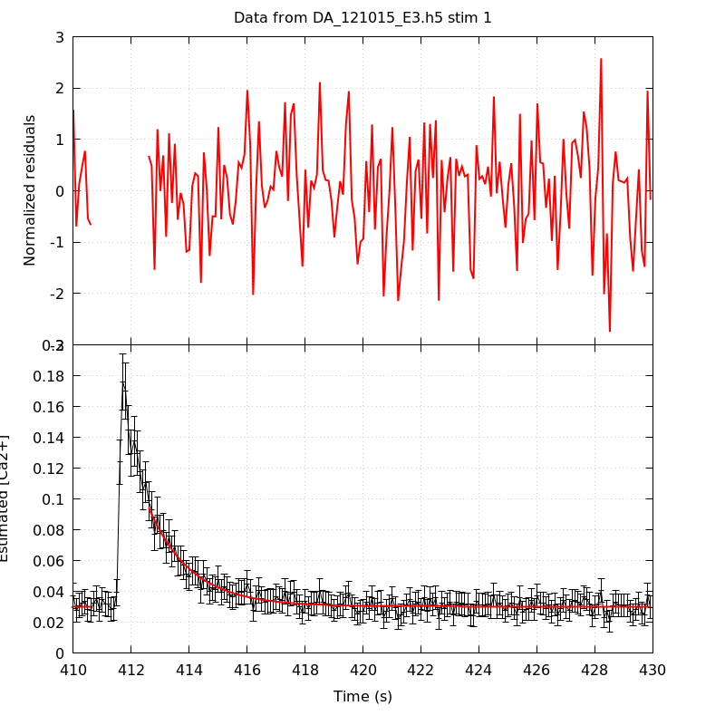
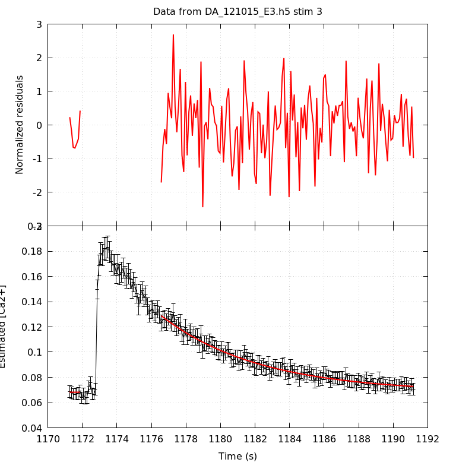
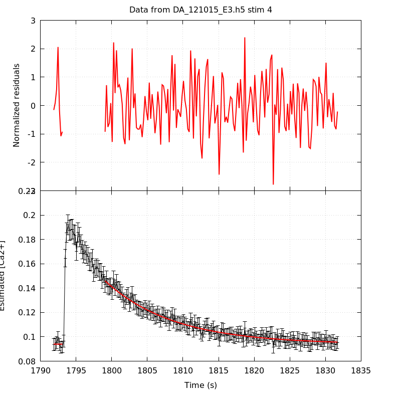
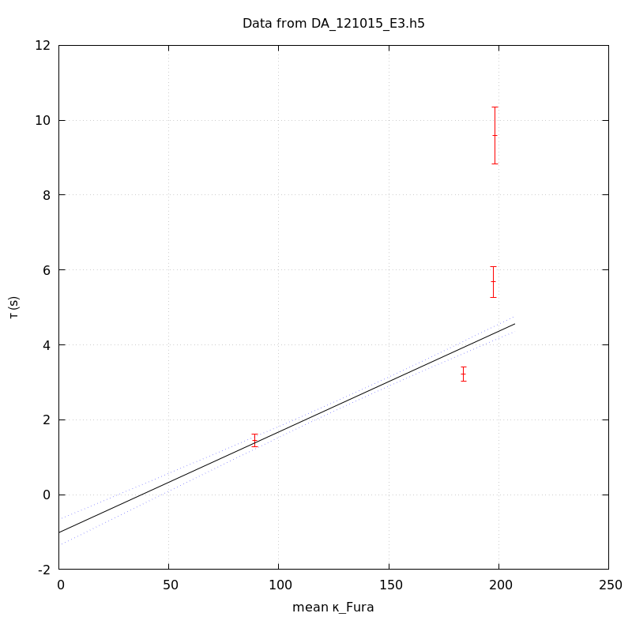

The baseline length is: 7.
When fitting tau against kappa_Fura only the transients for which the fit RSS and the lag 1 auto-correlation of the residuals were small enough, giving an overall probability of false negative of 0.02, were kept (see the numerical summary associated with each transient).
The good transients are: 1, 2, 3, 4.
The time at which the 'good' transients were recorded appear in red.
On each graph, the residuals appear on top. Under the null hypothesis, if the monoexponential fit is correct they should be centered on 0 and have a SD close to 1 (not exactly 1 since parameters were obtained through the fitting procedure form the data.
The estimated [Ca2+] appears on the second row. The estimate is show in black together with pointwise 95% confidence intervals. The fitted curve appears in red. The whole transient is not fitted, only a portion of it is: a portion of the baseline made of 7 points and the decay phase starting at the time where the Delta[Ca2+] has reached 50% of its peak value.
The time appearing on the abscissa is the time from the beginning of the experiment.
Transient 1 is 'good'.

nobs = 181
number of degrees of freedom = 178
baseline length = 7
fit started from point 26
estimated baseline 0.0302444 and standard error 0.000343892
estimated delta 0.0639845 and standard error 0.0027467
estimated tau 1.4512 and standard error 0.0837448
residual sum of squares: 168.023
RSS per degree of freedom: 0.943947
Probability of observing a larger of equal RSS per DOF under the null hypothesis: 0.692695
Lag 1 residuals auto-correlation: -0.010
Pr[Lag 1 auto-corr. > -0.010] = 0.522
Transient 2 is 'good'.

nobs = 168
number of degrees of freedom = 165
baseline length = 7
fit started from point 39
estimated baseline 0.0460622 and standard error 0.000350198
estimated delta 0.066416 and standard error 0.00112497
estimated tau 3.21585 and standard error 0.0968943
residual sum of squares: 163.751
RSS per degree of freedom: 0.992428
Probability of observing a larger of equal RSS per DOF under the null hypothesis: 0.51285
Lag 1 residuals auto-correlation: 0.075
Pr[Lag 1 auto-corr. > 0.075] = 0.146
Transient 3 is 'good'.

nobs = 154
number of degrees of freedom = 151
baseline length = 7
fit started from point 53
estimated baseline 0.068179 and standard error 0.000676047
estimated delta 0.0606593 and standard error 0.000905032
estimated tau 5.67869 and standard error 0.206915
residual sum of squares: 132.928
RSS per degree of freedom: 0.880315
Probability of observing a larger of equal RSS per DOF under the null hypothesis: 0.85218
Lag 1 residuals auto-correlation: -0.087
Pr[Lag 1 auto-corr. > -0.087] = 0.868
Transient 4 is 'good'.

nobs = 171
number of degrees of freedom = 168
baseline length = 7
fit started from point 36
estimated baseline 0.0939105 and standard error 0.00053253
estimated delta 0.0520937 and standard error 0.000903073
estimated tau 9.59201 and standard error 0.391216
residual sum of squares: 147.919
RSS per degree of freedom: 0.880469
Probability of observing a larger of equal RSS per DOF under the null hypothesis: 0.865579
Lag 1 residuals auto-correlation: -0.008
Pr[Lag 1 auto-corr. > -0.008] = 0.502
Since the [Fura] changes during a transient (and it can change a lot during the early transients), the unique value to use as '[Fura]' is not obvious. We therefore perform 3 fits: one using the minimal value, one using the mean and one using the maximal value.
The observed tau (shown in red) are displayed with a 95% confidence interval that results from the fitting procedure and is therefore meaningful only if the fit is correct!
No serious attempt at quantifying the precision of [Fura] and therefore kappa_Fura has been made since the choice of which [Fura] to use has a larger effect and since the other dominating effect is often the certainty we can have that the saturating value (the [Fura] in the pipette) has been reached.
The straight line in black is the result of a weighted linear regression. The blue dotted lines correspond to the limits of pointwise 95% confidence intervals.

Best fit: tau = -0.772091 + 0.0265642 kappa_Fura
Covariance matrix:
[ +2.76644e-02, -1.85865e-04
-1.85865e-04, +1.43463e-06 ]
Total sum of squares (TSS) = 768.038
chisq (Residual sum of squares, RSS) = 276.163
Probability of observing a larger of equal RSS per DOF under the null hypothesis: 1.07638e-60
R squared (1-RSS/TSS) = 0.640431
Estimated gamma/v with standard error: 37.6446 +/- 1.69737
Estimates kappa_S with standard error (using error propagation): -30.0651 +/- 6.39697
kappa_S confidence intervals based on parametric bootstrap
0.95 CI for kappa_S: [-39.3737,-19.1854]
0.99 CI for kappa_S: [-42.2198,-15.4887]

Best fit: tau = -1.01321 + 0.026882 kappa_Fura
Covariance matrix:
[ +3.14655e-02, -2.03520e-04
-2.03520e-04, +1.48561e-06 ]
Total sum of squares (TSS) = 768.038
chisq (Residual sum of squares, RSS) = 281.61
Probability of observing a larger of equal RSS per DOF under the null hypothesis: 7.06458e-62
R squared (1-RSS/TSS) = 0.633338
Estimated gamma/v with standard error: 37.1996 +/- 1.68667
Estimates kappa_S with standard error (using error propagation): -38.6909 +/- 6.81636
kappa_S confidence intervals based on parametric bootstrap
0.95 CI for kappa_S: [-47.8321,-27.6295]
0.99 CI for kappa_S: [-50.3468,-23.7489]

Best fit: tau = -1.23238 + 0.0270059 kappa_Fura
Covariance matrix:
[ +3.55073e-02, -2.20948e-04
-2.20948e-04, +1.52925e-06 ]
Total sum of squares (TSS) = 768.038
chisq (Residual sum of squares, RSS) = 291.125
Probability of observing a larger of equal RSS per DOF under the null hypothesis: 6.06666e-64
R squared (1-RSS/TSS) = 0.62095
Estimated gamma/v with standard error: 37.0289 +/- 1.69559
Estimates kappa_S with standard error (using error propagation): -46.6337 +/- 7.28369
kappa_S confidence intervals based on parametric bootstrap
0.95 CI for kappa_S: [-55.9137,-36.073]
0.99 CI for kappa_S: [-58.6356,-32.1935]
4 out of 4 transients were kept.
sigma(tau): 0.0837448, 0.0968943, 0.206915, 0.391216
Residual correlation at lag 1: -0.01016578504005216, 0.07488813738567233, -0.08743426464485923, -0.007768266361038915
Probablity of a correlation at lag 1 smaller or equal than observed: 0.522, 0.14600000000000002, 0.868, 0.502
RSS/DOF: 0.943947, 0.992428, 0.880315, 0.880469